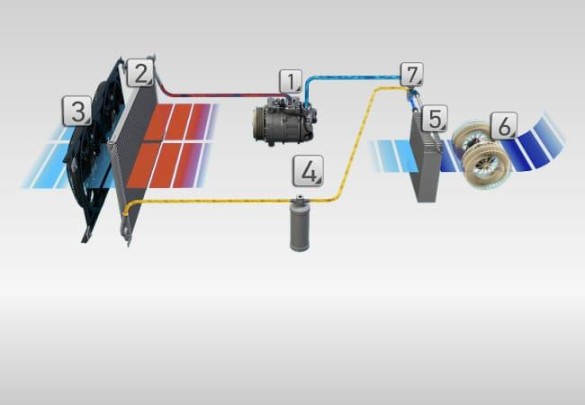

El Aire Acondicionado de nuestro Spark funciona igual que el refrigerador, donde un gas es comprimido por un compresor, para luego dejarlo descomprimir. Al volverse nuevamente gas, absorbe temperatura de la zona lográndose valores menores al 0° C, que llegan al interior del auto a través de un ventilador.
Para el control de la climatización en el habitáculo del vehículo se necesita el circuito del refrigerante y el circuito de la refrigeración. Una mezcla de aire frío y caliente permite crear las condiciones de climatización idóneas, independientemente de las condiciones externas. Con ello, el aire acondicionado representa un factor esencial para la seguridad y el confort en la conducción.
Todos los componentes del circuito de refrigeración están conectados entre sí por medio de mangueras flexibles y/o conductos de aluminio, formando así un sistema cerrado. En el sistema circulan, accionados por el compresor, el refrigerante y el aceite del refrigerante.
Funcionamiento del aire acondicionado con válvula de expansión.
El circuito se divide en dos partes:

•La zona entre el compresor y la válvula de expansión se denomina zona de alta presión (ámbar/rojo).
•Entre la válvula de expansión y el compresor se encuentra la zona de baja presión (azul).
•El compresor comprime el refrigerante en estado gaseoso (con lo que se calienta enormemente) y lo presiona mediante alta presión a través del condensador. De esta manera, se elimina calor del refrigerante, éste se condensa y su estado se transforma de gaseoso a líquido.
•El filtro deshidratante, la siguiente estación, elimina las impurezas y las inclusiones del aire del refrigerante y retira la humedad. De este modo, se garantiza la efectividad del sistema y quedan protegidos todos los componentes ante posibles daños causados por las impurezas.
En el siguiente apartado podrás encontrar como es el funcionamiento exacto del aire acondicionado automotriz
Click aquí para dirigirte al apartado.